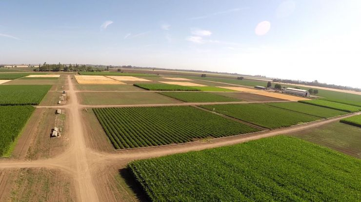
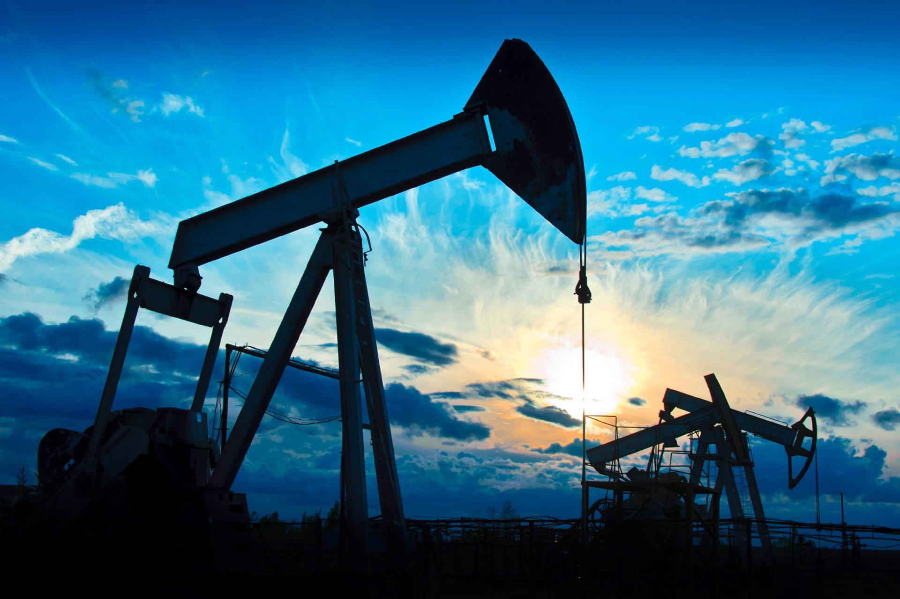

«تأثير الزحمة » هو التباطؤ في تدفق حركة المرور الكثيفة على الطريق بين مركزين حضريين كبيرين. هذه ظاهرة غريبة من الحركة بشكل خاص وخاصة الطرق السريعة. فمن الملاحظ حدوث تباطؤ تدريجي على أساس منتظم بين جهتين. في رحلة نموذجية من 200 كم من الممكن أن يبدو أن كل شيء يسير على ما يرام وفجأة يتكون تباطؤ سريع أو بطيء، والتي يمكن ان تسبب في الاغلاق الكامل لاتجاهات الطرق السريعة. ثم تبدأ تدريجيا جميع المركبات للتعجيل بالسرعة. وفي بعض الأحيان يصبح تدفق حركة المرور لايتجاوز أكثر من 70 كيلومترا إلى الانتعاش بعد التوقف التام. بعض السائقين يحاولون استعادة سرعات المركبات أسرع من غيرهم، وبالتالي فإنها تسبب الانكماش من جديد، حتى التوقف النهائي وفي كثير من الأحيان أقل من 5 كم من الأولى.
قد تحدث هذه الظاهرة توقف كامل للمركبات أكثر من مرة قبل وصولها إلى وجهتها، ومن هنا جاءت تسميته من تأثير جنزرة. ونتيجة لهذا تكون رحلة أطول حيث يتطلب زيادة من 20-30 دقيقة لعبور مسار 250 كم بالإضافة للتعب المتعلق بالتركيزأكثر من المعتاد أو اللازم. وتحدث ظاهرة أخرى مشابهة إلى حد ما أيضا في المناطق الحضرية خلال ساعات الذروة، ويطلق عليه تأثير الأكورديون، وهو عادة ظرفية وغير متكررة.
«تأثير الأكورديون» هو تباطؤ في تدفق حركة المرور الكثيفة على الطرق الحضرية. وكثيرا ما لوحظ خلال ساعات الذروة. على عكس تأثير جنزرة يحدث فقط في الرحلات القصيرة في المناطق الحضرية. وكثيرا ما يستخدم هذا المصطلح من قبل مُدَوِِّنو ْوَقَائِع حركة المرور من المراكز الرئيسية.لمزيد من المعلومات عن جهود الدوله فى التعامل مع الازدحام الحضرى لمزيد من المعلومات عن جهود الدوله فى التعامل مع الازدحام الحضرى
الطاقة الشمسية هي الضوء والحرارة المنبعثان من الشمس اللذان قام الإنسان باستغلالهما منذ العصور القديمة باستخدام مجموعة من وسائل التكنولوجيا التي تتطور باستمرار. وتضم تقنيات استخدام الطاقة الشمسية استخدام الطاقة الحرارية للشمس سواء للتسخين المباشر أو ضمن عملية تحويل ميكانيكية لحركة أو لطاقة كهربائية، أو لتوليد الكهرباء عبر الظواهر الكهروضوئية باستخدام ألواح الخلايا الضوئية الجهدية بالإضافة إلى التصميمات المعمارية التي تعتمد على استغلال الطاقة الشمسية، وهي تقنيات تستطيع المساهمة بشكل بارز في حل بعض من أكثر مشاكل العالم إلحاحا اليوم لمزيد من الملومات عن تحسين استخدام الطاقه البديله
تُعد الأراضي الزراعية أحد أهم الموارد الإنتاجية القومية غير المتجددة والتي
تتزايد ندرتها عاماً بعد
آخر. ومن ثم فقد بات التوسع الزراعي الأفقي من خلال استصلاح أراضي جديدة
أحد أهم ركائز السياسة
الزراعية في جمهورية مصر العربية، نظراً للدور الهام الذي يلعبه في تحقيق
الأمن الغذائي، وتعويض الفقد
في الأراضي الزراعية القديمة، وخفض حدة الكثافة السكانية في الوادي والدلتا،
وتوفير فرص العمل.
وتستهدف استراتيجية التنمية الزراعية المستدامة حتى ٢٠٣٠ استصلاح نحو
٣,١ مليون فدان حتى عام
٢٠٣٠)١٠(.
ويقصد باستصلاح الأراضي جميع العمليات التي تجرى على الأرض تمهيداً
للزراعة، بينما يعرف
الاستزراع على أنه تهيئة الأرض التي تم استصلاحها لمعرفة مدى ملاءمتها
للحياة النباتية بعد إجراء اختبارات
عليها ومعالجة تربتها والوصول بها إلى مرحلة الإنتاجية الحدية. ويجب التفرقة
بين مفهومي استصلاح وإصلاح
الأراضي، إذ أن الأرض التي تحتاج للإصلاح هي أرض كانت منتجة زراعياً
وحدثت بها مشاكل تحد من إنتاجها،
أما الأرض التي تحتاج للاستصلاح هي أرض بكر لم تُستزرع من قبل وتحتاج
استصلاح لجعلها منتجة. لمزيد من المعلومات عن الاحياء الريفى المصرى

يعرف التلوث بأنه إدخال الملوثات التي تسبب تغيرًا سلبيًا في البيئة الطبيعية. قد يكون التلوث على شكل مادة (صلبة أو سائلة أو غازية) أو على شكل طاقة (مثل النشاط الإشعاعي أو الحرارة أو الضوضاء أو الضوء)، الملوثات (عناصر التلوث) هي إما مواد / طاقات دخيلة أو ملوثات متوفرة بشكل طبيعي. على الرغم من أن التلوث البيئي يمكن أن يكون ناتجًا عن حوادث طبيعية فإن كلمة «تلوث» تعني بشكل عام أن الملوثات لها مصدر بشري، أي ناتجة عن الأنشطة البشرية. يُصنف التلوث غالبًا إما من تلوث من مصدر ثابت أو تلوث غير محدد المصدر. في عام 2015 قتل التلوث 9 ملايين شخص في جميع أنحاء العالم. لمزيد من العلومات عن معالجه وتقليل التلوث

التضامن الاجتماعي هي وحدة مجموعة أو فئة منتجة أو قائمة على اشتراك المصالح، الأهداف العامة، المعايير والتعاطف. تشير إلى علاقات مجتمعية تربط الناس معا كفريق واحد. يستعمل المصطلح في علم الاجتماع والفلسفة. ما يشكل أساس التضامن يختلف بحسب المجتمعات. في المجتمعات البسيطة يمكن أن يستند على القرابة والقيم المشتركة. في مجتمعات أكثر تعقيداً هناك نظريات مختلفة حول العوامل التي تساهم في الشعور بالتضامن الاجتماعي. لمزيد من المعلومات عن التضامن الاجتماعى

يحدث التغير المناخي عندما تؤدي التغييرات في نظام مناخ الأرض إلى ظهور أنماط مناخية جديدة تظل قائمة لفترة طويلة من الزمن وهذه الفترة الزمنية قد تكون قصيرة فتصل إلى عدة عقود فقط أو قد تصل إلى ملايين السنين. وقد حدد العلماء العديد من نوبات تغير المناخ خلال تاريخ الكرة الأرضية الجيولوجي، وفي الآونة الأخيرة، ومنذ الثورة الصناعية، يتأثر المناخ بشكل متزايد بسبب الأنشطة البشرية التي تقود إلى الاحتباس الحراري ولذلك من الشائع استخدام المصطلحين كمترادفين في هذا السياق لمزيد من المعلومات عن التغير المناخى
ما بين اليوم فى 2021 والبارحة 2011 وما تلاها من تحديات وتوترات ثم استقرار وانطلاق بدأ من عام 2014 ومازال مستمراً، سنوات سبع مرت على مصر تكاتف فيها الشعب مع قيادته السياسية وحكوماته متحملين معاً مسئولية بناء الدولة وصمودها فى مواجهة تحديات داخلية وخارجية لاتتوقف، فمصر التى واجهت تحديات جمة في توفير المتطلبات الأساسية من الطاقة بعد عام 2011 أصبح اليوم لديها فائض فى الغاز الطبيعى للتنمية والتصدير، وتوسعت في كافة الأنشطة البترولية والبنية التحتية لقطاع البترول والغاز لتضاعف من قدرات الدولة وإمكانياتها فى هذا القطاع بشكل غير مسبوق. لمزيد من المعلومات عن قطاع البترول

قطاع الكهرباء المصري من الركائز الأساسية في تنمية العديد من المجالات الحيوية، فالكهرباء أحد مقايس تقدم ورفاهية الشعوب. كانت بداية الكهرباء في مصر علي يد رجل الأعمال الفرنسي شارل ليبون عام 1893. تعد مصر من الدول الرائدة في هذا القطاع، حيث أن التطبيقات الأولي للكهرباء كانت في فرنسا لأغراض الإنارة العامة كانت في عام 1880. متوسط نصيب الفرد في مصر من الطاقة الكهربية 1782 كيلو وات وهذا المتوسط أقل من المتوسط العالمي البالغ 2730 ك.و.س للفرد عام وفقاً لتقارير 2009. لمزيد من المعلومات عن قطاع الكهرباء
إن قطاع الرعاية الصحية أو القطاع الطبي هو قطاع في النظام الاقتصادي يعمل على توفير السلع والخدمات لمعالجة المرضى من خلال تقديم الرعاية العلاجية أو الوقائية أو التأهيلية أو التلطيفية أو حتى في بعض الأحيان الرعاية غير الضرورية. وينقسم قطاع الرعاية الصحية الحديثة إلى العديد من القطاعات الفرعية، كما يعتمد على فرق متعددة التخصصات من الأخصائيين المدربين والمهنيين المساعدين لتلبية الاحتياجات الصحية للأفراد والمجتمعات السكانية..
يمثل قطاع الرعاية الصحية واحدًا من أكبر القطاعات وأكثرها نموًا على مستوى العالم. ونظرًا لأن هذا القطاع ينفق أكثر من 10 بالمائة من الناتج المحلي الإجمالي (GDP) لمعظم الدول المتقدمة، فإنه يشكل جزءًا هائلاً من اقتصاد أي دولة. قطاع الصحه
برنامج تكافل وكرامة هو برنامج التحويلات النقدية المشروطة الذي أطلقته وزارة التضامن الاجتماعي تحت مظلة تطوير شبكات الأمان الاجتماعي.
هو برنامج للمساعدات النقدية المشروطة يقدم مساعدة للأسر الفقيرة والأكثر احتياجا بجمهورية مصر العربية، وذلك عن طريق الاستهداف الموضوعي للأسر التي لديها مؤشرات اقتصادية واجتماعية منخفضة تحول دون إشباع احتياجاتها الأساسية وكفالة حقوق أطفالها الصحية والتعليمية، هذا بالإضافة إلى مد شبكة الحماية لتشمل الفئات التي ليس لديها القدرة على العمل والإنتاج مثل كبار السن (65 سنة فأكثر) أو من هم لديهم عجز كلى أو إعاقة. لمزيد من المعلومات عن التكافل والكرامه

النقل وسيلة الانتقال من مكان إلى اخر وقد استعمل الإنسان النقل منذ القدم حيث تطورت وسائل النقل عبر الزمن من النقل بواسطة الحيوان ومن ثم العربات التي تجرها الحيوانات حتى القطارات والسفن والمركبات ذات المحركات وصولاً إلى وسائل النقل الحديثة مثل الطائرات والصواريخ والغواصات. لمزيد من المعلومات عن النقل
انا الطالب / احمد محمد نصر الدين محمود
بالصف الثالث الاعدادى
من محافظة الاسكندريه بمدرسه الفريق عبد المنعم واصل
حاصل على شهادات كتير فى انواع مختلفه من المسابقات
معايا لغات HTML,CSS,JavaScript,Python
بس استخدمت فى الموقع ده لغات HTML,CSS,JavaScript